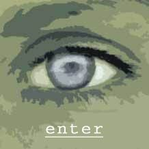

Dawn- By Nick Van Borst
when she first poked out her head that morning
there was something strange,
and yet unmistakable,
in the cool morning air
she slid out of her hole into the sunlight,
turned her head first one way and then the other
and, filled with anticipation,
bounded into the distance
everywhere it was happening,
as small creatures emerged from their resting
and scented an unmistakable absence
in that cool morning air
reluctant at first, as if with disbelief,
they investigated the strange stillness
brought by the night,
almost expecting, in a blink,
the world to return to motion
but the day wore on and the silence persisted,
until it was filled with their excitement
at the feast which would last for weeks,
until the last food rotted
a day went by and then another
while life found a new, meandering rhythm
and the birds welcomed each morning
with a song that had not been heard
for hundreds of years.
|  |